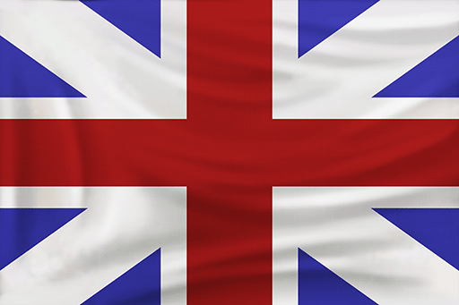
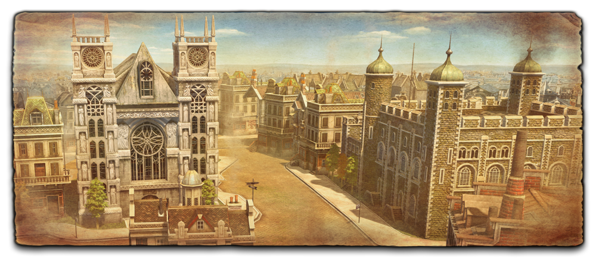

Velká Británie
 Domovské město: Londýn
Vlastnost: Usedlosti vytvoří jednoho osadníka zdarma po stavbě.
Strategie: Boom
Unikátní jednotky: Lučístník, raketa
Unikátní budova: Usedlost
Elitní jednotky: Mušketýr, husar
AI osobnost: Alžběta I.
Britové si mohou v early-game vybudovat silnou ekonomiku, jelikož dokážou trénovat osadníky rychleji než ostatní civilizace. Měli by se tedy soustředit na sběr dřeva pro stavbu usedlostí. Britská armáda je v pozdější fázi hry silná, jelikož jejich elitní jednotky jsou mušketýři a husaři, jednotky tvořící podstatnou část každé armády. Jejich karty se také zaměřují na posílení námořnictva a granátníků.
V Novém světě byla Velká Británie mocná koloniální mocnost po porážce několika dalších evropských mocností. Časem založili 13 kolonií, které povstaly a poté vytvořily Spojené státy americké. Obsadili Kanadu, tehdy pod kontrolou Francie, v 1763 a ovládali ji do roku 1867, stále zde však měli veliký vliv. Dále bojovali proti Napoleonovi v letech 1800-1815 a porazili ho v koalici u Waterloo.
Británie započala průmyslovou revoluci, hnutí, které razilo cestu k modernizaci celého světa. Okolo 19. století byla Británie největší říší v dějinách lidstva a byli nejmocnější a nejvlivnější ze všech zemí v té době.